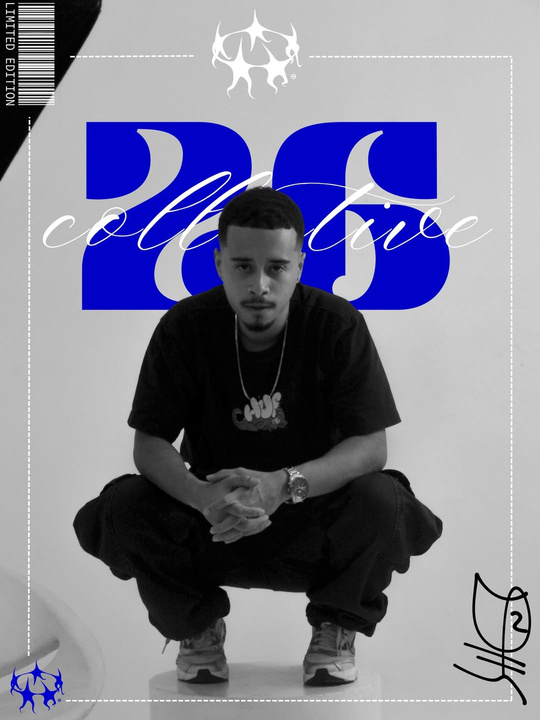
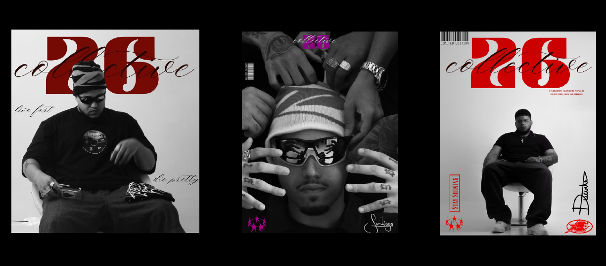
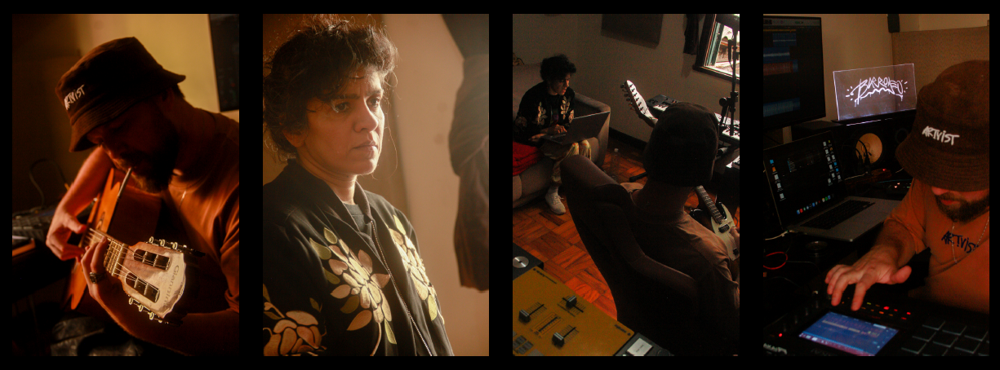
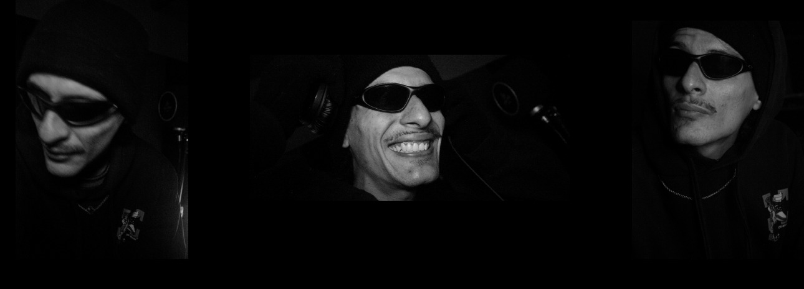

Atualmente, dirijo o 26 Collective. Dirigi e produzi, de forma independente, videoclipes de artistas nacionais e internacionais.
Iniciei no audiovisual como fotógrafo em 2016, e acabei adentrando para o mercado da tecnologia em 2019. Foi quando em 2023, meu coração voltou a bater mais forte para fazer o que amo, só que dessa vez em formato de vídeo.
Desde então sou aluno da RECLEARNING e aluno vitalício na SAND, duas das maiores e mais renomadas escolas do audiovisual; onde pude aprender e entender que entregar um excelente vídeo vai além do melhor equipamento; é história, técnica, processo e inteligência.

Projetos selecionados de direção, produção e edição.

Arte, atitude, movimento.
Direção e produção independente de videoclipes de artistas nacionais e internacionais.

Thiago Barromeo & Soom T
Documentação da produção do álbum de Thiago Barromeo (nomeado ao Grammy Latino 2019), com participação da lenda do Reggae internacional, Soom T.
Videoclipe Independente
Fotografia e produção independente do videoclipe do aclamado artista de Hip-Hop Jamaicano durante sua passagem pelo Brasil.

Documentário - SJ Thirteen
Roteiro, produção e edição do documentário sobre a produção do álbum do artista de Trap, com lançamento para o segundo semestre de 2026.
Videoclipe - SJ Thirteen
Produção independente do videoclipe considerado por muitos o ponto de partida para a revolução do cenário de Trap nacional.
Captação de Evento
Documentação da primeira edição do evento Barromeo Convida!
Como um profissional do audiovisual e da tecnologia, pude vivenciar e trabalhar diretamente com grandes e renomadas empresas multinacionais.
Contando comigo em seu time, terá à disposição um profissional com tato artístico e ampla visão de negócio.